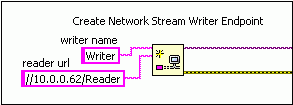
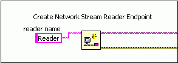
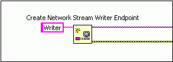
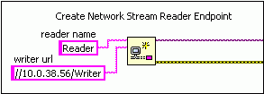

When a Create Network Stream Writer Endpoint function runs, it creates a writer endpoint and uses the URL you specify in the reader url input to connect to a reader endpoint that you create with the Create Network Stream Reader Endpoint function. This connection results in a valid network stream.
Wiring this input is just one way of creating a valid network stream. You also can leave the reader url input unwired. However, in this situation, you must wire the URL of a writer endpoint to the writer url input of the Create Network Stream Reader Endpoint function. Both of these methods are equivalent and result in a valid network stream by connecting the reader and writer endpoints together.
The following table shows examples of each of these methods.
| Writer Endpoint | Reader Endpoint | Notes |
|---|---|---|
|
 |
 |
If you configure the endpoints in this manner, the writer endpoint establishes a connection with the reader endpoint. Therefore, you can change the writer endpoint that connects to the reader endpoint. |
|
 |
 |
If you configure the endpoints in this manner, the reader endpoint establishes a connection with the writer endpoint. Therefore, you can change the reader endpoint that connects to the writer endpoint. |